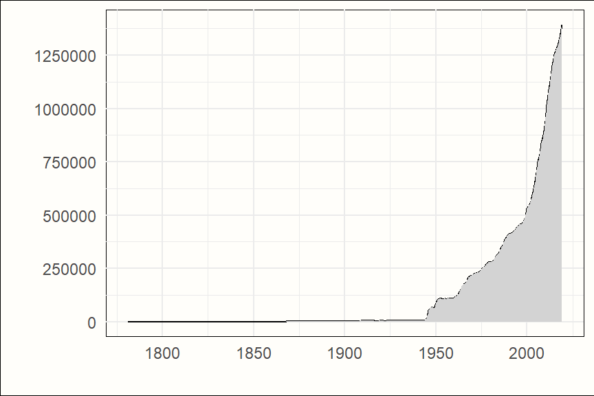

(PART) 入门
介绍
科 学通常被认为是一个累积的过程。在他们的科学努力中，研究人员以前辈科学家积累的证据为基础。艾萨克·牛顿的一句名言强调，如果我们想看得更远，我们可以站在“巨人的肩膀上”。我们中的许多人对科学着迷，因为它是进步的，增进了我们对世界的理解，并帮助我们做出更好的决策。
至少从数字上来看，这种观点可能是合理的。在历史上，我们从未像今天这样能够获得如此多的已发表研究文章形式的证据。世界各地每天都会产生数拍字节的研究成果。仅在生物医学领域，每年就发表超过一百万篇同行评审的文章 [@bjork2008global]。
已发表的研究成果数量也几乎呈指数增长。PubMed，一个最大的书目数据库中每年索引的文章数量，就以一种典范的方式象征着这一点。直到20世纪中叶，每年只列出几百篇研究文章。在接下来的几十年里，这些数字大幅上升，并且自21世纪初以来，它们迅速飙升（见图 @ref(fig:pubmed)）。
原则上，这种发展应该让我们对科学的前景感到兴奋。如果科学是累积的，那么发表的更多研究就等于更多的证据。这应该使我们能够建立更强大的理论，并消除过去的谬论。
然而，当然，事情并没有那么简单。在斯坦福大学的约翰·伊奥安尼迪斯（John Ioannidis）一篇极具影响力的论文中，他批评了科学会自动累积并不断改进的观点。他的文章标题恰如其分地是《为什么科学不一定是自我纠正的》[@ioannidis2012science]。他认为，研究领域通常可能存在于这样一种状态：在一个特定的主题或理论上产生了大量的研究成果，但基本的谬论仍然没有受到挑战，只是被延续了下来。
早在20世纪70年代，杰出的心理学家保罗·米尔就观察到，在某些研究学科中，理论和时尚潮流之间存在着密切的相似之处。米尔认为，许多理论并没有不断改进或反驳，它们只是在人们开始对它们失去兴趣时“消失”了 [@meehl1978theoretical]。
一个令人不快的真相是，科学过程，如果任其发展，不会自动将我们带到所有可能的世界中最好的一个。随着每天产生空前数量的研究成果，完整地看待和批判性地评估证据体系变得更加重要。荟萃分析在这方面非常有帮助，只要我们承认它自身的局限性和偏差。
什么是荟萃分析？
它的创始人之一，Gene V. Glass，将荟萃分析描述为“对分析的分析”[@glass1976primary]。这个简单的定义已经告诉我们很多。在传统的研究中，分析的单位是一些人、标本、国家或物体。在荟萃分析中，主要研究本身成为我们分析的要素。
荟萃分析的目的是整合、总结和解释所有与明确定义的研究领域或研究问题相关的现有证据 [@lipsey2001practical, 第1章]。然而，这只是实现这一目的的一种方法。至少有三种不同的方法可以通过这些方法来综合来自多项研究的证据 [@cuijpers2016meta]。
传统/叙述性综述。直到20世纪80年代，叙述性综述一直是总结研究领域最常见的方法。叙述性综述通常由研究领域的专家和权威人士撰写。关于叙述性综述中的研究如何选择，以及如何定义综述的范围，没有严格的规定。关于如何从综述的证据中得出结论，也没有固定的规则。总的来说，这可能导致偏向于作者的观点。尽管如此，当以平衡的方式撰写时，叙述性综述可以帮助读者全面了解一个领域的相关研究问题和证据基础。
系统性综述。系统性综述试图使用明确定义的和透明的规则来总结证据。在系统性综述中，研究问题是预先确定的，并且存在一个明确的、可重现的方法论，通过该方法论选择和综述研究。系统性综述旨在涵盖所有可用的证据。它们还使用预定义的标准评估证据的有效性，并以系统的方式呈现结果的综合。
荟萃分析。大多数荟萃分析可以被视为一种高级的系统性综述。荟萃分析的范围是预先明确定义的，主要研究也是以系统和可重现的方式选择的，并且也有明确的标准来评估证据的有效性。这就是为什么常见的是发现研究被称为“系统性综述和荟萃分析”。然而，有一个方面使荟萃分析与众不同。荟萃分析旨在以定量的方式结合先前研究的结果。荟萃分析的目标是将选定研究中报告的定量结果整合到一个数值估计中。然后，该估计总结了所有单个结果。例如，荟萃分析量化了药物的效果、疾病的患病率或两种属性之间的相关性，跨所有研究1。因此，它们只能应用于报告定量结果的研究。与系统性综述相比，荟萃分析通常必须对总结的证据类型更加排他。要进行荟萃分析，通常需要研究使用相同的设计和测量类型，和/或提供相同的干预（参见第 @ref(pitfalls) 章）。
个体参与者数据荟萃分析
根据定义，还有第四种证据综合方法，即所谓的个体参与者数据 (IPD) 荟萃分析 [@riley2010meta; @riley2021individual]。传统上，荟萃分析基于已发表文献中发现的研究的汇总结果（例如，均值和标准差，或比例）。在 IPD 荟萃分析中，所有研究的原始数据都会被收集并合并成一个大数据集。
IPD 荟萃分析有几个优点。例如，可以推算缺失数据，并以完全相同的方式将统计方法应用于所有研究。此外，它们可以更容易地探索影响感兴趣结果的变量。在传统的荟萃分析中，只能使用所谓的研究层面变量（例如，发表年份或研究中使用的人群）来做到这一点。然而，通常是参与者层面信息（例如，个人的年龄或性别）可能作为结果的重要调节因素发挥作用。只能使用 IPD 荟萃分析来探索此类变量。
IPD 荟萃分析是一种相对较新的方法，目前进行的大多数荟萃分析仍然是“传统”荟萃分析。这也是我们不将在本指南中介绍 IPD 荟萃分析方法的原因之一。
这与传统荟萃分析更优越无关——事实恰恰相反。这仅仅是因为直到最近，在大多数学科中，公开提供所有研究数据一直非常罕见。虽然从已发表的研究报告中提取汇总结果相对容易，但从所有相关研究中获取原始数据则更具挑战性。例如，在生物医学研究中，已发现同时考虑个体参与者和汇总数据的研究只能从大约 64% 的符合条件的研究中获得 IPD [@riley2007evidence]。一项最新的综述发现，虽然 IPD 荟萃分析中包含的研究的中位数为 11 项，但只能从 7 项研究的中位数中获得个体参与者数据 [@wang2021methodological]。
“超级愚蠢的练习”：一段历史轶事
荟萃分析不是由一个人发明的，而是由许多创始之母和创始之父发明的 [@o2007historical]。首次尝试对独立但相似的研究的效果进行统计总结可以追溯到大约 100 年前，并且可以与卡尔·皮尔逊和罗纳德·A·费舍尔这两位有史以来最重要的统计学家联系起来。
皮尔逊在 20 世纪初综合了关于英国帝国各地伤寒疫苗接种效果的发现，以计算汇总估计值 [@shannon2016statistical]。费舍尔在他 1935 年关于实验设计的开创性著作中，涵盖了分析来自农业研究的多项研究数据的方法，并且已经认识到研究结果可能因地点和时间而异的问题 [@fisher19351he; @o2007historical]。
然而，“荟萃分析”这个名称及其开始崭露头角可以追溯到 20 世纪中叶激烈的一场学术争端。1952 年，著名的英国心理学家汉斯·于尔根·艾森克（图 @ref(fig:eysenck)）发表了一篇文章，声称心理疗法（当时这主要意味着弗洛伊德精神分析）是无效的。如果患者在治疗过程中好转，那是因为他们的病情无论如何都会因与治疗无关的因素而得到改善。更糟糕的是，艾森克声称，心理疗法经常会妨碍患者好转。
心理疗法的声誉受到了沉重打击，直到 20 世纪 70 年代末才恢复。在此期间，Gene V. Glass 开发了一种他称之为“荟萃分析”的技术，该技术允许汇集标准化均数差2跨研究。他的技术首次广泛应用是在 美国心理学家 发表的一篇文章中，该文章由玛丽·L·史密斯和格拉斯本人撰写 [@smith1977meta]。在这项大型研究中，来自 375 项研究的结果与超过 4000 名参与者在荟萃分析中结合在一起。
该研究发现，心理疗法的汇集效应为 0.68，这可以被认为是相当大的。格拉斯的工作产生了巨大的影响，因为它提供了定量证据表明艾森克的判断是错误的。然而，艾森克本人并不信服，称荟萃分析为“对学术的放弃”和“超级愚蠢的练习”[@eysenck1978exercise]。
(ref:eysenck) 汉斯·于尔根·艾森克（Sirswindon/CC BY-SA 3.0）。

今天我们知道，史密斯和格拉斯的研究可能高估了心理疗法的效果，因为它没有控制纳入研究中的偏差 [@cuijpers2019eysenck]。然而，一些心理疗法是有效的这一主要发现已在随后的几十年中得到无数其他荟萃分析的证实。艾森克的严峻回应无法改变荟萃分析很快成为各个研究领域中常用的方法。这段时间被非常恰当地描述为“荟萃分析大爆炸”[@shadish2015meta]。
大约在格拉斯开发他的荟萃分析方法的同时，亨特和施密特开始制作他们自己的荟萃分析技术，强调对测量伪影的校正 [@schmidt1977development; @hunter2004methods]。荟萃分析也通过彼得·埃尔伍德和阿奇·科克伦等人的开创性工作进入了医学领域，他们使用荟萃分析表明阿司匹林对心脏病发作的复发具有小的，但在统计学和临床上相关的预防作用 [@peto1980aspirin; @elwood2006first; @o2007historical]。
在 80 年代中期，丽贝卡·德西莫尼安和南·莱尔德介绍了一种计算随机效应荟萃分析的方法（参见第 @ref(rem) 章），该方法一直沿用至今 [@dersimonian1986meta]。在过去的四十年中，无数其他创新有助于提高荟萃分析方法的适用性、稳健性和多功能性。
科克伦和坎贝尔协作
科克伦协作组织（或简称 科克伦），成立于 1993 年，以阿奇·科克伦的名字命名，在应用荟萃分析的发展中发挥了关键作用。科克伦是一个由研究人员、专业人士、患者和其他相关利益相关者组成的国际网络，他们“共同努力，制作可信、易于获取且不受商业赞助和其他利益冲突影响的健康信息”。
科克伦使用严格的标准来综合生物医学领域的证据。该机构总部设在伦敦，但在世界多个国家也设有地方分支机构。
科克伦协作组织定期发布更新的干预措施系统评价手册 [@higgins2019cochrane] 和 科克伦偏倚风险工具 [@sterni2019rob]。这两者都被广泛认为是系统评价和荟萃分析所有技术细节的标准参考著作（参见第 @ref(spec-search-coding) 章）。
一个类似于科克伦的组织是位于奥斯陆的坎贝尔协作组织，它主要关注社会科学领域的研究。
苹果和橘子：荟萃分析陷阱快速游览
在过去的几十年里，荟萃分析已成为一种普遍接受的研究工具。这并非没有其自身的代价。进行高质量的初步研究通常非常昂贵，并且可能需要很多年才能最终分析结果。相比之下，可以不用太多资源并在相对较短的时间内生成荟萃分析。然而，荟萃分析通常具有很高的影响力，并且经常被引用 [@patsopoulos2005relative]。
这意味着科学期刊通常非常倾向于发表荟萃分析，即使它们的质量或科学价值有限。不幸的是，这为研究人员创造了一种自然激励，以产生许多荟萃分析，并且科学考虑有时会退居其次。
Ioannidis [-@ioannidis2016mass] 批评说，每年都会产生大量的冗余和误导性荟萃分析。在一些“热门”主题上，有超过 20 个最新的荟萃分析。一些荟萃分析也可能受到公司利益的严重偏见，例如在药物治疗研究中 [@ebrahim2016meta; @kirsch2002emperor]。正如我们之前提到的，可重复性是良好科学的标志。然而，在现实中，许多荟萃分析的可重复性往往受到限制，因为没有报告重要信息 [@lakens2017examining]。
一个常见的问题是，关于相同或重叠主题的不同荟萃分析得出不同的结论。例如，在心理治疗研究中，一直存在一场关于所有类型的心理治疗是否产生相同结果的问题的争论。已经发表了无数的评论，支持这种或另一种结论 [@wampold2013great; @cuijpers2019role]。
虽然其中一些问题可能与科学过程的系统性问题有关，但另一些问题可以追溯到荟萃分析本身的缺陷。因此，我们想引导您快速了解常见的荟萃分析陷阱 [@borenstein2011introduction, 第 40 章; @greco2013meta; @sharpe1997apples]。
“苹果和橘子”问题
有人可能会说，荟萃分析意味着将苹果与橘子混合在一起。即使使用最严格的纳入标准，荟萃分析中的研究也永远不会完全相同。纳入的样本、干预的实施方式、研究设计或研究中使用的测量类型之间总是会存在或大或小的差异。
这可能会有问题。荟萃分析意味着计算一个数值估计值，该估计值代表所有研究的结果。从统计角度来看，总是可以计算出这样的估计值，但是当研究不共享对于回答特定研究问题很重要的属性时，它就变得毫无意义。
想象一下，一个不得不承认的荒谬场景，其中一位荟萃分析师决定将关于工作满意度对工作绩效影响的研究以及所有关于药物对糖尿病患者 HbA1c 值影响的可用证据都汇集到一个荟萃分析中。对于组织心理学家和糖尿病学家来说，结果都将毫无意义。
现在，想象一下，同一个可怜的荟萃分析师，试图从先前的错误中吸取教训，过度补偿并进行荟萃分析，其中仅包含 1990 年至 1999 年间发表的研究，其中 60 多岁的加拿大男性患有中度抑郁症状，每天使用 40 毫克氟西汀治疗，正好六周。荟萃分析师可能会自豪地向精神科医生报告该研究的积极结果。然而，精神科医生可能只会问：“如果我的病人 45 岁并且是法国人，我该怎么办？”
这使我们想到一个重要的观点。荟萃分析的目标不是不顾一切地将可以组合在一起的所有东西都扔在一起。荟萃分析可用于回答超出单个研究的特殊性的相关研究问题 [@borenstein2011introduction, 第 40 章]。因此，荟萃分析的范围和特异性应基于它想要回答的研究问题，并且该问题应具有实践相关性（参见第 @ref(spec-search-coding) 章）。
例如，如果我们感兴趣的是，一种培训计划是否在各个年龄组、文化区域和环境中有效，那么不限制研究的人口和原籍国是完全有意义的。但是，建议对研究中评估的培训计划更加严格，并且仅包括培训具有一定长度或涵盖相似主题的培训计划。
这样的荟萃分析的结果不仅使我们能够估计培训的汇集效应，而且还使我们能够量化这种效应是否以及在多大程度上可能变化。荟萃分析能够适应并理解这种形式的异质性。在第 @ref(heterogeneity) 章中，我们将更仔细地研究这个重要的概念。
总而言之，“苹果和橘子”问题实际上是否是一个问题在很大程度上取决于荟萃分析想要回答的问题。研究之间的变化通常是没有问题的，甚至可以提供见解，如果它被正确地纳入荟萃分析的目的和问题规范中。
“垃圾进，垃圾出”问题
荟萃分析产生的证据质量在很大程度上取决于其总结的研究的质量。如果我们在纳入的发现中报告的结果有偏差或完全不正确，那么荟萃分析的结果也将同样存在缺陷。这就是“垃圾进，垃圾出”问题所指的。通过评估纳入研究的质量或偏倚风险（参见第 @ref(spec-search-coding) 章和 @ref(risk-of-bias-plots)），可以在一定程度上缓解此问题。
然而，如果许多或大多数结果的质量都低于最佳水平并且可能存在偏差，即使是最严格的荟萃分析也无法平衡这一点。在这些情况下，通常可以得出的唯一结论是，对于审查的主题不存在可信的证据，并且将来必须进行更多高质量的研究。然而，即使是这样一个相当令人失望的结果也可能提供信息，并有助于指导未来的研究。
“文件抽屉”问题
文件抽屉问题指的是并非所有相关的研究结果都已发表，因此在我们的荟萃分析中缺失的问题。如果我们可以安全地假设研究结果在已发表的文献中随机缺失，那么无法在荟萃分析中整合所有证据将是不理想的，但至少是可以容忍的。
不幸的是，事实并非如此。与失败的复制或具有消极和不确定结果的研究相比，积极的、“创新的”发现通常会产生更多的轰动效应。与此相符，研究表明，在过去的几十年中，越来越少的消极发现在许多学科中发表，尤其是在社会科学和生物医学领域 [@fanelli2012negative]。
我们有充分的理由相信，具有消极或“令人失望”结果的研究在已发表的文献中被系统性地低估，并且存在所谓的发表偏倚。这种偏倚的确切性质和程度在荟萃分析中充其量只能是一个“已知的未知数”。
然而，有一些方法可以通过这些方法来最大限度地减少发表偏倚。一种方法与研究的搜索和选择方式有关（参见第 @ref(spec-search-coding) 章）。另一种方法是统计方法，它试图估计荟萃分析中是否存在发表偏倚，以及其影响有多大。我们将在第 @ref(pub-bias) 章中介绍其中的一些方法。
“研究者议程”问题
在定义荟萃分析的范围、搜索和选择研究以及最终汇集结果测量时，研究人员必须做出无数的选择。荟萃分析带有许多“研究者自由度”[@wicherts2016degrees]，为可能有时是任意的，有时是未公开的个人偏好导致的决策留下了很大的空间。
当研究人员有意识或无意识地受到他们自己的议程驱动时，荟萃分析师在他们的运作方式上的自由度变得尤其成问题。荟萃分析通常由应用研究人员进行，并且对审查的主题具有广泛的特定主题专业知识是一把双刃剑。一方面，它可以帮助在一个特定领域中得出并回答有意义的研究问题。
另一方面，这些专家也对他们正在研究的研究领域进行了深入的投资。这意味着许多荟萃分析师可能对某些主题持有强烈的观点，并且可能有意识或无意识地将结果引导到符合他们信念的方向。
有证据表明，给定相同的数据集，即使是具有最佳意图的经验丰富的分析师也可能得出截然不同的结论 [@silberzahn2018many]。在干预研究中，问题可能更加严重，在干预研究中，一些荟萃分析师具有实质性的研究者忠诚度，因为他们帮助开发了正在研究的干预类型。当然，这些研究人员可能比证据表明的更倾向于以更积极的方式解释荟萃分析的结果。
减少研究者议程问题的一种方法是预先注册，并在开始收集荟萃分析的数据之前发布详细的分析计划（参见第 @ref(spec-search-coding) 章和 @ref(pre-registration)）。
问题规范、研究搜索与编码
在上一章中，我们花了一些时间讨论荟萃分析的常见问题和局限性。其中许多问题，例如“苹果和橘子”问题、“文件抽屉”问题或“研究者议程”问题，都可以并且应该由每位荟萃分析师解决。
这早在您开始计算第一个结果之前就开始了。没有数据就无法进行荟萃分析，而这些数据必须来自某个地方。我们首先必须指定我们计划进行的荟萃分析的研究问题和资格标准，搜索研究并选择相关的研究，提取我们需要用于计算的数据，然后对我们稍后要报告的重要信息进行编码。
在这些步骤中的每一个步骤中，我们可以或应该遵循几个规则、标准和建议；它们可以帮助我们创建一个高质量的荟萃分析。这种高质量的荟萃分析包含对所有合适的证据的全面选择，在主题方面是公正和公正的，并且从其结果中得出有效、合理和具有实践相关性的结论。
然而，即使“遵循所有规则”，可能也并不总是清楚哪个特定决策是在实践中实现这一目标的最佳选择。人们可能会不同意您处理某些事情的方式。这是正常的，通常也很好，只要您的方法论决策是透明的和可重复的 [@pigott2020methodological]。
在本章中，我们将按时间顺序介绍一些在我们开始进行第一次计算之前需要的重要的构建块。本章的长度并不代表这种数据获取过程在现实中所花费的时间。根据我们的经验，统计分析仅占荟萃分析所花费时间的最多 15%，远低于之前的所有内容。但是，指定研究问题、系统地搜索研究和可靠地编码提取的数据至关重要。它构建了每个良好荟萃分析的基础。
定义研究问题
在设计研究时，我们首先要做的是定义研究问题。荟萃分析也不例外。要定义一个好的研究问题，首先将其视为一种问题规范的形式会有所帮助。要具有相关性和影响力，荟萃分析应解决一个问题。要识别此类问题，一些特定主题的知识是必要的。
因此，如果您想找到一个好的荟萃分析的研究问题，最好选择一个您有一些背景知识的研究领域，并首先问自己几个基本问题。目前在这个特定领域中哪些问题是相关的？某些主题的当前知识是否存在差距？是否有任何未解决的公开讨论？考虑预期的目标受众也可能会有所帮助。哪些问题与其他研究人员相关？其他人，例如医疗保健专业人员、州机构、学校或人力资源部门可能面临哪些问题？
荟萃分析取决于先前的研究。一旦您知道研究问题的大致方向，查看当前的文献会有所帮助。先前是否存在关于该主题的初步研究，他们如何解决该问题？他们使用了哪些方法和结果测量？他们在文章的背景和讨论部分中提到了哪些局限性？先前的评论和荟萃分析是否已解决该主题，他们留下了哪些未解决的问题？
卡明斯及其同事 [-@cummings2013conceiving] 提出了一些我们可以用来指定我们的荟萃分析所涵盖的问题的标准，即 FINER 框架。它指出，一个研究问题应该是可行的，有趣的，新颖的，符合伦理道德的，并且具有相关性的。
逐步地，问自己这些问题应该可以更轻松地定义您想通过荟萃分析实现的目标。也可能会清楚地表明荟萃分析不适合您的问题。例如，可能根本没有相关的研究已解决该主题；或者文献中可能已经存在最近的高质量荟萃分析，这些荟萃分析已充分解决了该问题。
然而，如果您觉得您的问题与一个或多个群体的人相关，先前的研究已提供了与该问题相关的数据，并且先前的评论和荟萃分析尚未充分或适当地解决该问题，则您可以继续将其转化为研究问题。
让我们给您一个如何做到这一点的例子。有证据表明，医学研究中存在性别偏见 [@hamberg2008gender; @nielsen2017one]。尤其是在早期的几十年中，许多临床试验仅或主要使用男性参与者，并且结果被简单地假设为也适用于女性。这可能导致女性在某些疾病（例如心脏病）方面的健康结果更差 [@kim2009status; @mosca2013fifteen]3。
让我们想象一下，您是一名医学研究人员。您听说一种常用的药物 Chauvicepine 可能在女性中产生严重的副作用，但这些副作用在很大程度上尚未得到认识。您确定如果这是真的，这将是一个高度相关的问题，因为它将意味着许多女性被处方了一种可能对她们不安全的药物。
对文献的回顾表明，大多数调查 Chauvicepine 的研究都是随机安慰剂对照试验。这些试验中的第一个是在仅或主要由男性组成的人群中进行的。但您还发现了一些更新的研究，其中性别构成更为平衡。许多这些试验甚至分别报告了在试验中发生的男性和女性的负面副作用的数量。您还在医学杂志上找到了一篇最近的评论，其中一位医生报告说，在她的诊所中，许多女性在接受该药物治疗时都经历了负面副作用。
基于此，您决定在荟萃分析中解决此问题可能很有趣。因此，您将刚刚发现的问题转化为一个研究问题：“来自随机安慰剂对照试验的证据是否表明，与安慰剂相比，Chauvicepine 会导致女性的负面副作用显着增加”？
得出研究问题的初步表述只是第一步。我们现在必须将其转化为具体的资格标准。这些资格标准将指导哪些研究将被纳入我们的荟萃分析的决策。因此，它们非常重要，并且应该是绝对透明和可重复的。
开始指定资格标准的一个好方法是使用 PICO 框架 [@mattos2015systematic]。此框架主要针对干预研究，但它对其他类型的研究问题也有帮助。PICO 中的字母代表人群 (Population)、干预 (Intervention)、对照组 (Control group) 或比较以及结果 (Outcome)：
人群：研究必须包括哪种类型的人或研究对象才能符合资格？同样，请记住尽可能精确地解决这些问题，并考虑每个定义的含义。如果您只想纳入对年轻人进行的研究，那么“年轻人”是什么意思？仅包括 18 至 30 岁之间的人吗？是否可以从已发表的文章中轻松确定这一点？还是只是重要的是，人们是从通常年轻人经常光顾的地方招募的，例如大学和 Cardi B 音乐会？如果您只想纳入对患有特定疾病的患者进行的研究，该疾病是如何诊断的？由训练有素的医疗保健专业人员进行诊断，还是自我报告的问卷调查就足够了？这些问题中的许多可以通过求助于 FINER 框架的 F 和 R 部分来回答。对已发表的研究施加这样的限制是否可行？这是一个相关的区分吗？
干预：研究必须检查哪种类型的干预（或替代地，暴露）？如果您想研究干预的效果，务必清楚哪种类型的治疗符合资格。干预必须持续多长时间？允许谁提供干预？干预必须包括哪些内容？如果您不关注干预，自变量必须如何操作？是否必须通过特定的仪器进行测量？例如，如果您研究工作满意度，此构建必须如何在研究中进行操作？
对照组或比较：研究结果与什么进行比较？接受注意力安慰剂的对照组，还是药丸安慰剂？等待名单？另一种治疗？还是什么都没有？也可能根本没有比较或对照组；例如，如果您想研究不同研究中疾病的患病率估计值，或者不同栖息地中有多少物种的标本。
结果。研究必须测量哪种类型的结果或因变量？变量必须如何测量？是问卷调查分数的平均值和标准差吗？还是死亡或生病的患者人数？何时必须测量结果？仅仅在治疗后，无论治疗持续多长时间？还是在一年到两年后？
系统评价和荟萃分析指南
鉴于荟萃分析的质量通常低于最佳水平，因此已建立了一些关于如何进行荟萃分析的指南和标准。
如果您在生物医学研究中或在干预措施的效果方面对证据进行荟萃分析，我们强烈建议您遵循系统评价和荟萃分析的首选报告项目或 PRISMA [@moher2009preferred]。PRISMA 声明包含关于如何报告荟萃分析过程的几乎所有方面的几项建议。该声明也可以在网上找到。4
对于心理和行为研究的荟萃分析，可以遵循 美国心理学会 的 荟萃分析报告标准 [@appelbaum2018journal] 或 MARS。
虽然这些标准主要评论了应如何报告荟萃分析，但它们也对进行荟萃分析时的最佳实践具有影响。PRISMA 和 MARS 共享许多核心要素，并且我们在本章中介绍的许多内容也在这些指南中提到。
一个更详细的资源是干预措施系统评价的科克伦手册（参见第 @ref(history) 章），其中包含关于系统评价和荟萃分析几乎所有方面的精确建议。可以在 Pigott 和 Polanin [-@pigott2020methodological] 中找到社会科学中荟萃分析的方法学标准的概述。
虽然 PICO 框架是指定荟萃分析的资格标准的绝佳方法，但它并不涵盖所有可能相关的信息。还有一些其他方面需要考虑 [@lipsey2001practical]。
一个相关的细节是合格的研究设计。在循证医学中，通常只包括来自随机对照试验的证据（意味着参与者是通过机会分配到治疗组或对照组的研究）；但这并非总是必需的 [@borenstein2011introduction, 第 40 章]。
指定合格研究的文化和语言范围也可能会有所帮助。大多数研究都基于 WEIRD 人群，这意味着西方、受过教育、工业化、富裕和民主的社会 [@henrich2010most]。尤其是在社会科学中，某些影响或现象很可能无法很好地推广到具有其他社会规范的国家。然而，许多研究人员只考虑用英语发表的荟萃分析文章，以避免不得不翻译其他语言的文章。
这意味着来自不同语言区域的一些证据将不会被考虑在内。虽然英语是大多数学科中科学出版最常用的语言，但至少应在资格标准中明确说明存在此限制。然而，如果荟萃分析的目标之一是检查跨文化差异，通常建议将资格标准扩展到其他语言，前提是满足所有其他标准。
另一个重要的方面是允许荟萃分析的出版类型。有时，荟萃分析师只纳入发表在同行评审的科学期刊上的研究文章。理由是从此来源获得的研究符合更高的标准，因为它们已经通过了该领域专家的批判性审查。这种理由并非没有缺陷。在第 @ref(pitfalls) 章中，我们已经介绍了“文件抽屉”问题会严重限制荟萃分析结果的有效性，因为积极的发现更有可能被发表。
因此，减轻发表偏倚风险的一种方法是也包括灰色文献。灰色文献可以定义为所有类型的研究资料，这些资料尚未通过传统的出版形式提供。这包括研究报告、预印本、工作论文或会议贡献。学位论文通常也被视为灰色
Footnotes
当然，只有在荟萃分析技术应用合理，并且荟萃分析的结果允许进行这种概括的情况下，这种说法才是正确的。↩︎
即，两组之间均值的差异，例如干预组和对照组，以两组的汇集标准差的单位表示（参见第 @ref(s-md) 章）。↩︎
值得注意的是，性别偏见不仅会对女性产生负面影响，而且也会对男性产生负面影响；例如骨质疏松症等疾病 [@adler2014osteoporosis]。↩︎
最近，已发布更新的 PRISMA 2020 声明 [@page2021prisma]，取代了 2009 年的旧版本。新颖之处包括一个摘要报告清单，一个修订的流程图，其中还包含了关于搜索更新的信息，以及更加强调声明竞争利益和数据共享。↩︎